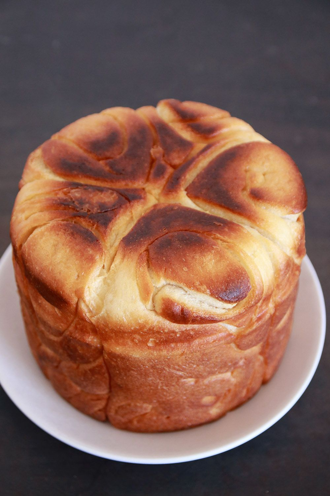

Kubana
Back

לא היה לי מושג מה יצא ואיך אעשה את זה, אבל התחלתי לקרוא קצת מתכונים בארץ ובעולם (מאוד נעזרתי במתכון הזה), להבין מה בדיוק אמורים לעשות ואיך אני גורמת לכך שתצא לי בסוף קובנה חמודה מהתנור. בתור חצי התימני שהוא, נמרוד כמובן עודד את פרץ היצירה הפתאומי שנחת עליי, ופטרל ליד התנור כשהיא נאפתה בקוצר רוח של תימני בשבת בבוקר.
נשבעת שלא דמיינתי שיצא לי כזה דבר טעים מהתנור. בסוף-בסוף זה סוג של לחם, אבל שיטת ההכנה, ההתפחה והאפייה גורמות לו לצאת מדהים. בחיי שאין מילה אחרת שמתאימה. כששיתפתי את התמונות של הקובנה בקבוצה שלנו ובסטורי באינסטגרם שלי, כבר הבנתי שאין מצב שהמתכון הזה לא עולה לבלוג. החלטתי להכין אחת נוספת; בעיקר כדי לודא שזה לא היה מקרי, וגם רציתי לנסות אותה על בסיס שמן זית ולצלם סרטון הדגמה קצר על הדרך.
בקיצור – למרות שבחלק מהתגובות כתבו לי “זו לא קובנה”, “זה נראה כמו חלה”, “אם זה לא נאפה כל הלילה זה לא נחשב”, “על בסיס חמאה זה של אשכנזים” – זו הקובנה שלי, ואני סופר גאה בה ומרוצה מהתוצאה! נכון שאני לא תימניה, אבל זה לא אומר שאי אפשר לשחק, להתנסות ואולי אפילו להצליח. לפעמים עצם העשייה היא כבר הצלחה, ובמקרה הזה באמת שמדובר בקובנה ממש טעימה. מזמינה גם אתכם לנסות!
- 500 grames of flour (or 3 1/2 cups)
- 10 grames of dry yeast (or 2 teaspoons)
- 70 grames of suger (or 1/3 of a cup)
300 ml of lukewarm water
- teaspoon of salt
Steps
.בקערת מיקסר עם וו לישה שמים קמח, שמרים, סוכר, מלח ומים ולשים במשך 6-7 דקות במהירות נמוכה עד לקבלת בצק אחיד ורך. אם הבצק מרגיש יבש מדי – מוסיפים מעט מים בהדרגה. הבצק צריך להיות נעים, רך ומעט דביק.
מכסים את הקערה ומתפיחים במשך כ-15 דקות במקום חמים. מוציאים אוויר מהבצק שתפח קצת, מכסים ומתפיחים שוב ל-15 דקות. שוב מוציאים אוויר, שוב מתפיחים – סך הכל 3 התפחות והוצאות אוויר.
- מעבירים את הבצק התפוח למשטח משומן קלות ומחלקים ל-5 חלקים
- יוצרים מכל חלק צורת כדור ונותנים להם לנוח מכוסים במשך 15-20 דקות.
- משמנים היטב את הסיר ואת המכסה שלו.
- משטחים כל פיסת בצק על המשטח המשומן לעלה די דק ומשמנים בחמאה או שמן בשכבה דקה בעזרת הידיים.
- מסדרים את שבלולי הבצק בתוך התבנית המשומנת ויוצקים עליהם את יתרת החמאה או השמן.
- מכסים את הסיר ומתפיחים עד שהקובנה תופחת וממלאה את הסיר עד כ-3/4 מגובהו.
- מחממים תנור ל-180 מעלות.
אופים את הקובנה במשך 30-40 דקות או עד שהיא תופחת (המכסה יתרומם) ומקבלת גוון זהוב עמוק מאוד.
הופכים על גבי צלחת הגשה ומגישים.